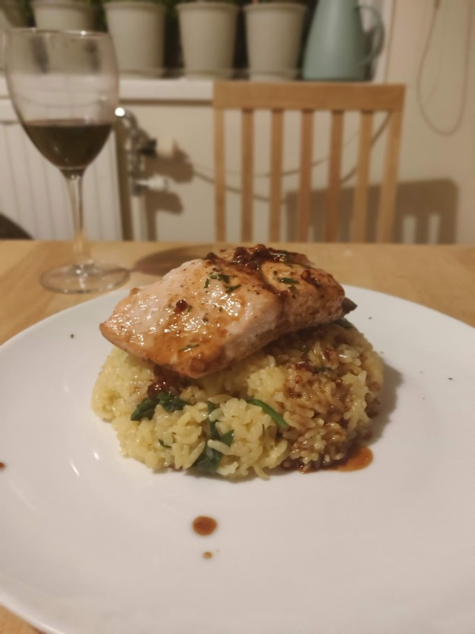

Salmon Pan Bake

Description
An easy weeknight dinner option, this recepie serves 4 or can optionally be meal prepped. Salmon is a great source of heatlhy fats and this recepie can be served with baked vegetables or on a bed of rice
Ingredients
- 1kg salmon steak fillet
- Panko breadcrumbs
- 2 tbsp butter
- 2-3 heaped tbsp mayonnaise
- 2-3 tbsp Dijon mustard
- 1 lemon
- 1 tbsp minced rosemary
- 1 tbsp minced thyme
- 1 egg
- 1 tbsp olive oil
Steps
- Debone and slice the salmon into 4 even steaks
- Add 2tbsp butter to a pan on medium heat
- Add the panko breadcrumbs and toast until golden
- Add the rosemary and thyme to the panko and season to taste with salt and pepper then set aside to cool
- Combine equal parts Dijon mustard and mayonnaise in a bowl
- Place salmon on a lightly oiled baking sheet
- Generously brush the salmon with the mayonnaise and mustard mix
- Add one egg white to the panko mix and layer the mix onto the salmon
- Bake in a 160 Celcius oven for 20-25 minutes
- Let cool for 3 minutes then top the juice of a lemon slice
- Serve with baked vegetables or rice